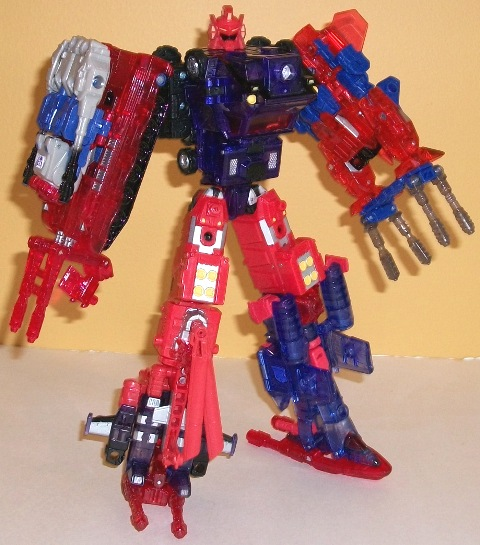
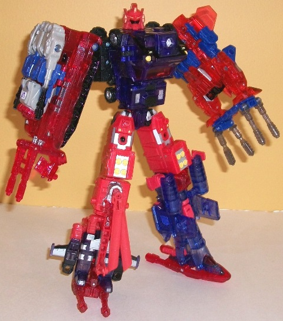

Allegiance : Autobot
Difficulty of Transformation : Hard
Rating : 7.9
(NOTE: Because this is a repaint, this is not a full-blown review. This mainly covers any changes made to the mold and the color scheme, and merely compares it to Energon Barricade. For a review on the mold itself, read the review of Energon Barricade here .)
At long last the final
member of the five-year Club Exclusive combiner arrived in 2009, and, as
you'd expect, it's red and blue and partially transparent-- rather prime-ish
colors, though seeing the final result of all this (read, Nexus Prime),
it obviously makes sense. Heatwave's light red is a tad on the obnoxiously
light side, though this of course fits with the solid red used for the
other combiner limbs, so I can hardly complaint about it at this point--
and it does work with the name "Heatwave". The dark transparent purplish
blue really offsets it nicely however, and combined with his other major
color-- black, it makes Heatwave look pretty decent overall., but I have
to admit there are some paint app clashes. The silver and yellow work as
excellent accent colors to the dark blue, but they're light enough where
they don't mesh that well with the already-light red. Conversely, the black
paint looks great on the red, but against the dark transparent blue you
can barely see it. (This is especially apparent in robot mode, as there's
a lot of black paint on the chest that you can barely see.) Surprisingly,
Heatwave ALSO has a bit of transparent red plastic used for his windows,
which looks quite good against the transparent blue and is my favorite
color combo of the toy-- I wish there was more of it. Heatwave's Shattered
Glass Decepticon symbol is on the top of right arm in robot mode-- kind
of an odd place to put it, really...
Heatwave is the first
"freebie" exclusive to have a new remolded head-- but not his normal robot
head, his gestalt head! That'll be covered in the review of the combined
form below.
Heatwave is particularly
worth it if you were planning to get Nexus Prime or if you've simply been
a member of the Club for five years and are getting him regardless, but
for a Club Exclusive he doesn't fetch a particularly high price, and the
mold is quite good. Even though the color scheme could use some minor work
in places, it's still okay, and if you're in the market for Club Exclusives,
this might be a good "starter toy" to ease you into the more expensive
stuff. But of course, he's certainly not for everyone.
 Nexus
Prime (Combination of Breakaway, Heatwave, Landquake, Skyfall, and Topspin)
Nexus
Prime (Combination of Breakaway, Heatwave, Landquake, Skyfall, and Topspin)

Allegiance
: Autobot
Difficulty of Transformation
: Hard
Rating
: 7.9
Combining the previous
four Transformers Club "freebie" exclusives--
Skyfall
,
Landquake
,
Breakaway
, and
Topspin
--
with Heatwave as the torso forms Nexus Prime, revealed to be one of the
original thirteen Transformers. (Nexus Prime was originally to be called
Nexus Maximus, but for reasons I won't get into here, they changed the
name shortly after he was revealed.) Given that they mixed-and-matched
the Energon limb molds, unlike the other combiners using these molds from
the Energon toyline, this makes all of Nexus Prime's limb molds unique--
but the red-and-blue color scheme binds them all together and created a
very unified figure overall. Or at least, that was no doubt their INTENTION.
Unfortunately, somewhere along the way of having this combiner coming out
over five years, some plastic colors were knowingly or unknowingly tweaked
a bit, and the result is a combiner who has some serious lost potential.
Yes, all of the limbs are primarily red and blue, with a bit of black and
silver used for secondary colors. But they're mostly different SHADES of
red and blue. Skyfall's blue is more of a "pure" blue than Heatwave and
Topspin's, and Landquake's cherry red is a bit darker than Breakaway's
transparent lighter red. Every limb sticks out in some way that it wasn't
meant to-- Breakaway is the only one with tinted clear plastic for the
Energon bits instead of clear cherry red; Skyfall is the only limb who's
mostly blue; Topspin is the only limb who's mostly solid-colored; and Landquake
is unique simply because he doesn't share any of these other oddities.
It's a definite disappointment. The solid light red plastic stays the ame
across the limbs though, as does the silver and black paint apps.
Nexus Prime's new head
mold is very well-done, even if it is in a rather light red plastic. The
face looks like a sort of combination of all his component parts' faces--
a pretty nice touch, and the sculpt is crisp and well-defined. Unfortunately,
due to the base piece of plastic Nexus Prime's head sits on being transparent
AND being put under a lot of stress when transforming Heatwave into torso
mode, almost every Heatwave I've heard of has had the upper chest plate
crack. This isn't a HUGE deal-- you can still keep it on its metal pin
going across it somewhat easily, but you have to be a bit careful or it'll
fall off when you're transforming. Kinda of a bummer and an oversight,
there.
It's nice that the culmination
of five years' worth of Club "freebie" exclusives is a major character
in Transformers lore with and comes with a great new head sculpt, but the
slight incongruity between the different components and the aforementioned
mold defect with the piece at the base of Nexus' neck makes it a bit of
a disappointment, honestly. If you already have five (or four of the five)
components, it's worth it and a decent bonus, but it's not cool enough
to hunt down all five components after-the-fact, sadly enough.
No Stats
Reviews by Beastbot